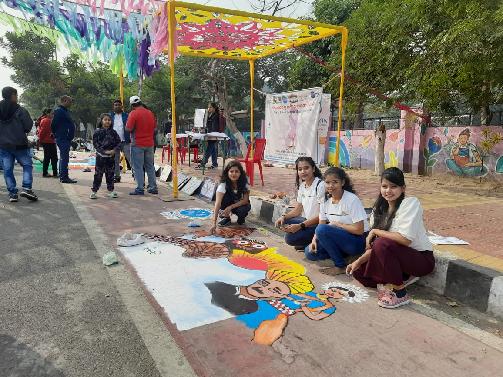

| IMPORTANCE OF EXTRACURRICULAR ACTIVITIES HELPS IN EXPLORING THE OUTER WORLD: Students’ lives are not restricted to textbook definitions and physics formulae to remember. The outer knowledge and wisdom are equally important. Non-Academic learning helps the students in knowing what is happening in the outer world. The extra-curricular activities of any genre give a helping hand to students’ inquisitive minds and support them in exploring the world outside their textbooks. |
| BOOSTS SOCIAL SKILLS: The most important benefit of extra-curricular activities is that it helps the students in boosting their social skills and helps in self-development. Communication is a vital asset in students’ lives and it helps the students to explore their freedom of speech in the right way! Having an interest in after-school activities is the best way to enhance your communication skills and learn about yourself. It helps you to work on yourself by knowing your strengths and weaknesses. In parallel, it also helps in building self-confidence. |
| Annual Function:During the Annual Function, our college transforms into a vibrant hub of activity. Students and teachers gather to enjoy a variety of performances. From colorful dances to melodious songs, everyone showcases their talents with enthusiasm. |
|  |
| Ptaha Utsaba:This time the festival will be organised in the three zones of the city on three Sundays. “Earlier, the stretch from Ram Mandir Square to Master Canteen was used for the festival. This year, so far two stretches have been confirmed — Sikharchandi and Master Canteen. |
| International women's day: celebration in our institution USBM.... A mesmerizing speech deliver by Miss. Mitali Chinara ma'am, Associate professor in Economics at Utkal university. ğ—ªğ—¼ğ—ºğ—²ğ—»'𘀠ğ——ğ—®ğ˜† ğ˜€ğ—²ğ—¿ğ˜ƒğ—²ğ˜€ ğ—®ğ˜€ ğ—®ğ—» ğ—¼ğ—½ğ—½ğ—¼ğ—¿ğ˜ğ˜‚ğ—»ğ—¶ğ˜ğ˜† ğ˜ğ—¼ ğ—¿ğ—®ğ—¶ğ˜€ğ—² ğ—®ğ˜„ğ—®ğ—¿ğ—²ğ—»ğ—²ğ˜€ğ˜€ ğ—®ğ—¯ğ—¼ğ˜‚ğ˜ ğ—´ğ—²ğ—»ğ—±ğ—²ğ—¿ ğ—²ğ—¾ğ˜‚ğ—®ğ—¹ğ—¶ğ˜ğ˜† ğ—¶ğ˜€ğ˜€ğ˜‚ğ—²ğ˜€ ğ—®ğ—»ğ—± ğ—®ğ—±ğ˜ƒğ—¼ğ—°ğ—®ğ˜ğ—² ğ—³ğ—¼ğ—¿ ğ—½ğ—¿ğ—¼ğ—´ğ—¿ğ—²ğ˜€ğ˜€ ğ˜ğ—¼ğ˜„ğ—®ğ—¿ğ—±ğ˜€ ğ—® ğ—ºğ—¼ğ—¿ğ—² ğ—²ğ—¾ğ˜‚ğ—¶ğ˜ğ—®ğ—¯ğ—¹ğ—² ğ˜„ğ—¼ğ—¿ğ—¹ğ—±. let's invest on Women and accelerate progress |